Gülşah Taşan için Özel Olarak Hazırlanmış Görsel Protokoller, Cihaz Hareket Yönleri ve Cilt Analiz Sistemi
👑 Linail Beauty Kurucusu & Master Artist: Gülşah Taşan
Eksiksiz Kabin Ansiklopedisi
Gülşah Taşan Kabin Envanter Kataloğu & Başlık Kullanım Atlası
Fotoğraflanan 20 ürün ve cihazın tamamı; farmakolojik içerikleri, seans dozajları, uygulama sıraları ve asla kullanılmayacağı kontrendikasyonlarıyla tek tek aşağıda listelenmiştir:
Kabin Ana Cihazı • Metal Gövde & Vakum Vortex Motoru
A, B, C solüsyon hazneleri dolum kapasitesi: 400 ml. Seans başı ortalama tüketim: 30-50 ml.
👐 Uygulanış Tekniği & Cihaz Uyumu:
Cihazın ana dokunmatik ekranından su akışı ve vakum barı seçilir. Vortex başlık cilde dik oturtulur, 1-2 saniye kaydırılarak çekilir.
🎯 Uyumlu Cilt Tipleri:
Tüm TiplerÖzellikle YağlıAkneliKomedonluKuru
⛔ HANGİ DURUMDA ASLA KULLANILMAZ? (KONTRENDİKASYON):
Kılcal damarları çatlamış (kuperozlu/rozasealı) yanaklarda yüksek vakum (Bar > 4) ASLA kullanılmaz! Aktif kistik sivilcelerin üzerine sabit vakumla basılmaz (enfeksiyonu çevre dokuya yayar).
🗣️ MÜŞTERİ "BU MAKİNE VE İŞLEM NE İŞE YARIYOR, YÜZÜME NE YAPIYOR?" DİYE SORDUĞUNDA:
"Şu an cildinizdeki tüm gözenekleri cerrahi olmayan hidro-vorteks teknolojisiyle mikron düzeyinde yıkıyoruz [İsim] Hanım. Sıradan bakımlarda tırnakla veya iğneyle sıkma yapılırken gözenek duvarları yırtılır ve sonrasında daha da genişler. Bu başlık ise spiral bir su girdabıyla cildinize laktik asit zerk ederken aynı anda siyah noktaları ve sebum tıkaçlarını vakumla çekip alıyor. Birazdan cam haznede çıkan partikülleri size de göstereceğim; cildiniz hem derinlemesine nefes alacak hem de tek seansta pürüzsüzleşecek."
Medikal Elektroterapi Konsolu • Galvanik & Yüksek Frekans
Raha Med Hydraderm Cellular Energy (Spa Face)
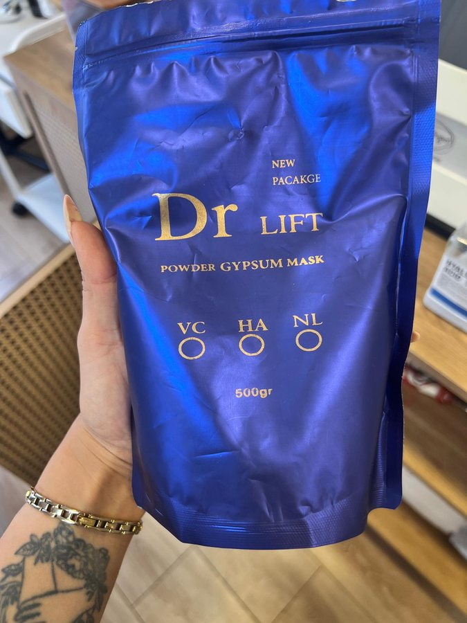
🧪 Formül & Aktif Bileşenler:
Galvanik doğru akım modülü (0.1 - 1.5 mA), Yüksek Frekans ozon deşarj bobini, Termal ısı maskesi çıkışı.
📏 Kabin Dozu & Süre:
Akım şiddeti: 0.3 - 0.8 mA (danışan toleransında). Dezan süresi: 3-4 dk. İyontoforez süresi: 4-5 dk.
⛔ HANGİ DURUMDA ASLA KULLANILMAZ? (KONTRENDİKASYON):
Kalp pili (pacemaker) taşıyanlarda, hamilelerde ve vücudunda büyük metal implant/platin olanlarda galvanik akım ASLA KULLANILMAZ! Danışanın üzerindeki tüm küpe, kolye, yüzükler çıkarılmalıdır.
🗣️ MÜŞTERİ "BU CİHAZ YÜZÜMDE NEYİ DEĞİŞTİRECEK?" DİYE SORDUĞUNDA:
"Bu cihaz hücrelerinizin gençlik enerjisini (ATP) uyaran hücresel terapi platformudur [İsim] Hanım. Normalde kremler cildin sadece en üst tabakasında kalır; ancak bu cihazın galvanik mikro akımları sayesinde sürdüğümüz somon DNA'sı ve hyaluronik asidi gözeneklerin en derin katmanına kadar itiyoruz. Cildiniz içeriden beslenerek dolgunlaşır."
Kabin Başlık Seti
Mormed 7-in-1 Başlık Ailesi & Kullanım Açıları
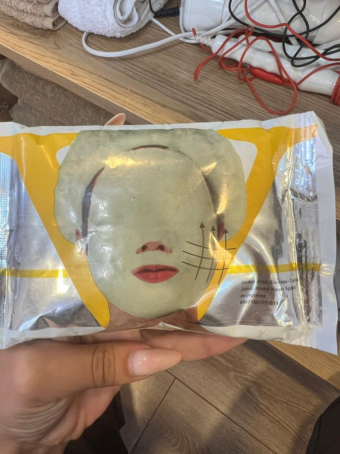
🧪 Formül & Aktif Bileşenler:
1. Spiral Vortex Başlık (90° dik tutuş)
2. 28kHz Scrubber Spatula (45° ileri itiş)
3. Bipolar RF Başlığı (40-42°C çeneden kulağa)
4. 1MHz Ultrasound Probu (Dairesel kavitasyon)
5. Cryo Soğuk Çekiç (2°C vazokonstriksiyon)
6. Sıcak Çekiç (40°C kas gevşetme)
7. Oksijen Sis Tabancası (0.2-0.4 Bar)
📏 Kabin Dozu & Süre:
Her başlığın seans içi süresi: 5 - 14 dakika arası.
⛔ HANGİ DURUMDA ASLA KULLANILMAZ? (KONTRENDİKASYON):
RF başlığı tek noktada 1 saniye bile sabit durdurulamaz (epidermal yanık riski). Kuru cilde scrubber metal spatulası asla sürülmez (cildi çizer).
🗣️ MÜŞTERİ "NEDEN BU KADAR ÇOK FARKLI BAŞLIK KULLANIYORSUNUZ?" DİYE SORDUĞUNDA:
"Çünkü cildimizin her tabakasının ihtiyacı farklıdır [İsim] Hanım. İlk başlığımızla gözenek kirlerini süpürdük, ikincisiyle kolajen liflerinizi 42 dereceye ısıtıp çene kontürünüzü toparlıyoruz, soğuk başlığımızla gözenekleri kilitliyoruz, en son ise LED ışıkla hücrelerinizi şarj ediyoruz. Yüzünüze tek düze bir bakım değil, 7 aşamalı klinik bir mimari uyguluyoruz."
Ozon Dezenfeksiyon & Bilye Elektrotlar
Raha Med Yüksek Frekans Cam Elektrotlar & Galvanik Problar
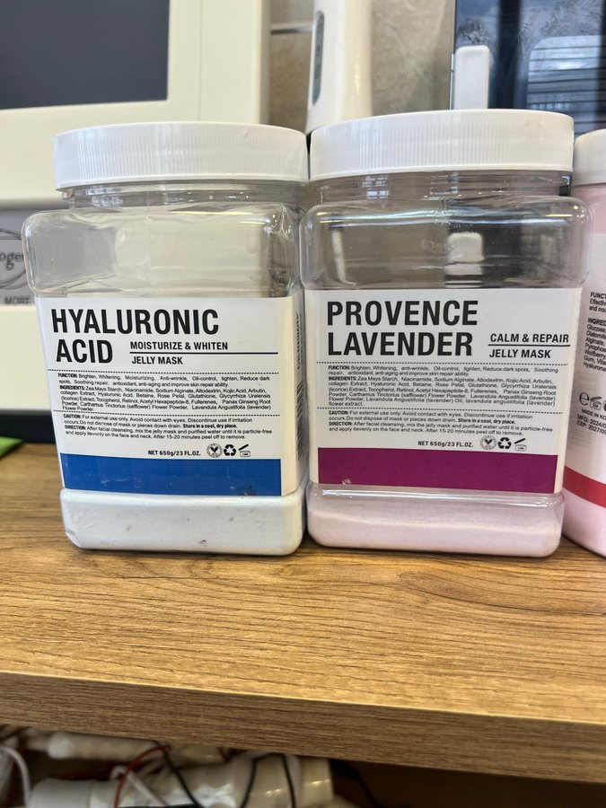
🧪 Formül & Aktif Bileşenler:
Argon/Neon gazlı cam tüpler, Çift Bilyeli prob (göz çevresi ve nazolabial), Silindirik Rulo prob (yanak ve alın).
📏 Kabin Dozu & Süre:
Yüksek frekans gezdirme: 3 dakika. Noktasal kıvılcım: sivilce başına 2-3 saniye. Galvanik bilye masajı: 5 dakika.
👐 Uygulanış Tekniği & Cihaz Uyumu:
Mantar elektrot gazlı bez üstünden cilde temas ettirilir. Noktasal sivri elektrot kistik sivilcenin 2 mm üzerinde havada tutularak mikro-kıvılcım çaktırılır.
🎯 Uyumlu Cilt Tipleri:
Akneliİltihaplı LezyonlarGöz Çevresi MorluklarıSarkmış Cilt
⛔ HANGİ DURUMDA ASLA KULLANILMAZ? (KONTRENDİKASYON):
Alkol bazlı losyon veya yanıcı tonik sürüldükten hemen sonra yüksek frekans elektrotu ASLA yaklaştırılmaz (kıvılcım tutuşma riski doğurur). Cilt tamamen kuru olmalıdır.
🗣️ MÜŞTERİ "BU ÇITIRTI SESİ VE KOKU NEDİR, CANIM YANAR MI?" DİYE SORDUĞUNDA:
"Hiç korkmayın, canınız kesinlikle yanmaz. O duyduğunuz çıtırtı ve kokladığınız taze yağmur sonrası kokusu saf ozon gazıdır (O3). Cam elektrotlarımız havadaki oksijeni ozona dönüştürerek gözenek içindeki tüm sivilce ve akne bakterilerini temas ettiği ilk 3 saniyede yok eder. Cildiniz tamamen dezenfekte olur ve sivilce oluşumu engellenir."
Fotodinamik Terapi & Vapozon
PDT LED Fototerapi Işık Tüneli & Ozonlu Buhar Makineleri
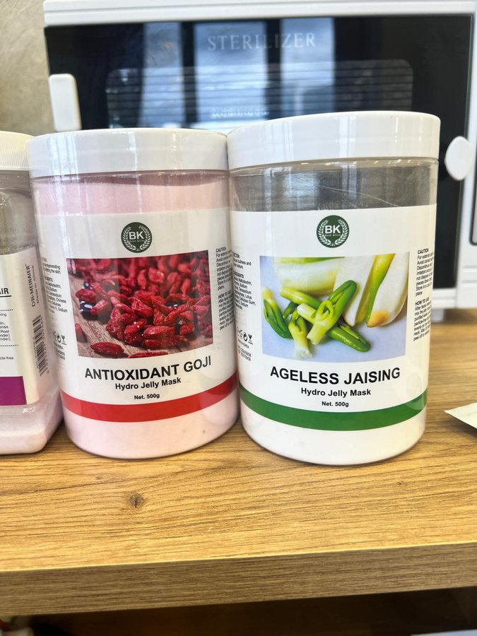
🧪 Formül & Aktif Bileşenler:
Kırmızı Işık (630nm - Kolajen/ATP), Mavi Işık (415nm - Porfirin/Akne), Yeşil Işık (525nm - Melanin/Leke), Sarı Işık (590nm - Lenf/Rozasea). Ozonlu su buharı.
📏 Kabin Dozu & Süre:
Buhar: 25 cm mesafeden 5-7 dakika. LED Işık Tüneli: 15 - 20 dakika.
👐 Uygulanış Tekniği & Cihaz Uyumu:
Danışanın gözlerine koruyucu opak gözlük takılır. Cilt tipine uygun renk seçilip kemer başın üstüne oturtulur.
⛔ HANGİ DURUMDA ASLA KULLANILMAZ? (KONTRENDİKASYON):
Epilepsi hastalarında yanıp sönen ışık modları ASLA kullanılmaz (sabit ışık verilir). Kuperozlu ve rozasealı cilde ozonlu sıcak buhar 4 dakikadan fazla tutulmaz (kılcalları genişletip çatlatır).
🗣️ MÜŞTERİ "BU RENKLİ IŞIKLAR NE İŞE YARIYOR?" DİYE SORDUĞUNDA:
"Bu ışıklar cildi soymadan ve ısıtmadan belirli nanometre dalga boylarıyla hücrelerinizi şarj eder [İsim] Hanım. Kırmızı ışık kendi kolajen üretiminizi tetikleyip çizgileri açarken, yeşil ışık lekeleri dengeler, mavi ışık ise yağ bezlerini sakinleştirir. Işık tünelinden çıktığınızda cildiniz dinlenmiş ve duru bir parlaklık kazanır."
Kendi Kendine Mikro-Köpüren Oksijenli Jel Temizleyici (500ml)
Kuru cilde eşit tabaka yayılır. 1.5 - 2 dakika kendi kendine bembeyaz oksijen köpüğü oluşturması beklenir. Islak parmak uçlarıyla masaj yapılıp durulanır.
🎯 Uyumlu Cilt Tipleri:
Tüm Cilt Tipleri (Akneli, Kuru, Hassas, Olgun)
⛔ HANGİ DURUMDA ASLA KULLANILMAZ? (KONTRENDİKASYON):
Açık kanamalı lezyonlar üzerine bastırarak ovulmaz. Göz içine kaçırılmamalıdır (göz ve dudak makyajı için Genosys DMR kullanılır).
🗣️ MÜŞTERİ "BU KÖPÜK KREM NE İŞE YARIYOR?" DİYE SORDUĞUNDA:
"Bu ürün cildinize değdiği anda kendi kendine aktifleşip mikro-oksijen kabarcıkları üreten medikal bir arındırıcıdır [İsim] Hanım. Cildinizi ovalamadan, köpüklerin patlama enerjisiyle gözeneklerin en dip köşesindeki ağır makyajı, egzoz dumanını ve toksinleri dışarı çeker. Cildiniz ilk saniyeden itibaren oksijenle doyar."
1. Oksijen tabancası ile 0.2 bar basınçla yüze mikro sis püskürtülür.
2. Eclado Enzim tozunu köpürtmek için su yerine kullanılır.
3. Scrubber spatulası kaydırılırken cildi sürekli nemli tutmak için tamponlanır.
🎯 Uyumlu Cilt Tipleri:
Tüm TiplerBariyeri BozulmuşNemsizRozasea
⛔ HANGİ DURUMDA ASLA KULLANILMAZ? (KONTRENDİKASYON):
Herhangi bir kontrendikasyonu yoktur; hipoalerjeniktir.
🗣️ MÜŞTERİ "BU SIKTIĞINIZ TONİK SIRADAN BİR SU MU?" DİYE SORDUĞUNDA:
"Kesinlikle sıradan bir tonik değildir [İsim] Hanım; cildinizin koruyucu asit mantosunu anında dengeleyen laktik asit ve bitkisel aktifler içerir. Musluk suyunun kirecini nötralize eder ve birazdan uygulayacağımız somon DNA'sının cildiniz tarafından sünger gibi emilmesi için zemin hazırlar."
Kırmızı Halı Karboksiterapi Kiti (Bohr Etkisi)
Genosys EZ CO2 Carboxytherapy Mask Kit
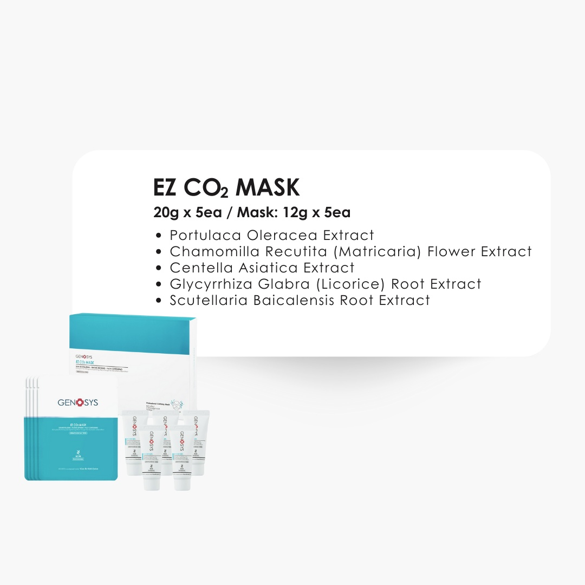
🧪 Formül & Aktif Bileşenler:
Sodyum Bikarbonat jel (20ml) + Sitrik Asit kaplı aktive edici kuru maske ve boyun örtüsü.
📏 Kabin Dozu & Süre:
1 Tüp Şırınga (20 ml) tüm yüz, gıdı ve boyuna kalın sürülür + 1 Aktive Edici Maske.
👐 Uygulanış Tekniği & Cihaz Uyumu:
Temiz ve kuru cilde jel kalınca yayılır. Kuru maske üzerine preslenir. 20 dakika bekletilir. Her 3-4 dakikada bir tampon baskı yapılır. Spatula ile jel sıyrılıp ılık süngerle silinir.
🎯 Uyumlu Cilt Tipleri:
Geniş GözenekliSarkmış / OlgunDonuk / MatLifting İsteyen Her Cilt
⛔ HANGİ DURUMDA ASLA KULLANILMAZ? (KONTRENDİKASYON):
HAYATİ UYARI: Aktif kızarık rozasea ve kılcal damar çatlağı olan ciltlere ASLA UYGULANMAZ! Aynı seansta AHA/Glikolik Asit (Melaser) veya kimyasal asit peeling ile ASLA üst üste sürülmez (kimyasal yanık yapar). Danışana önceden hafif ısınma ve çıtırtının normal olduğu söylenmelidir.
🗣️ MÜŞTERİ "YÜZÜMDEKİ BU ÇITIRTI VE HAFİF KARINCALANMA NORMAL Mİ, NE YAPIYOR?" DİYE SORDUĞUNDA:
"Çok normal ve tam olarak istediğimiz şey [İsim] Hanım! Şu an dünyaca ünlü 'Bohr Etkisi' gerçekleşiyor. Jel ile maske birleşince cildinize karbondioksit salınıyor; vücudunuz da bunu fark edip bu bölgeye hızla şok taze oksijen ve kan pompalıyor. Cildiniz içeriden oksijenlenerek anında parlar, lekeler ve akne skarları seans seans silinir."
Medikal Somon DNA Doku Onarım & Hücresel DNA Konsantresi
Bipolar RF veya Scrubber sonrası açılan dermal mikro kanallardan verilir. Mormed 1 MHz Ultrasound (Sürekli mod, 1.5 W/cm²) ile 8 dk veya Galvanik Pozitif (+) Kutup ile dermise itilir.
🎯 Uyumlu Cilt Tipleri:
Derin KırışıklıkElastikiyet KaybıAkne SkarlarıFotoyaşlanmaNemsiz
⛔ HANGİ DURUMDA ASLA KULLANILMAZ? (KONTRENDİKASYON):
Balık ve deniz ürünleri alerjisi bilinen danışanlarda ön kol içi yama testi (patch test) yapılmadan doğrudan yüze uygulanmaz.
🗣️ MÜŞTERİ "BU SERUM NE İŞE YARIYOR? NEDEN BU KADAR ÖZEL?" DİYE SORDUĞUNDA:
"Bu ürün Kore medikal estetiğinin zirvesi olan saf Somon DNA'sıdır (tam 60.000 ppm PDRN). Cildinize sıradan bir nemlendirici sürmüyoruz; cildinizin kendi genç kolajen liflerini sentezlemesini sağlayan bir hücre aşısı yüklüyoruz. Ultrasonik başlığımızla bunu gözeneklerinize zerk ettiğimizde o aynadaki cam cilt ışıltısını doğrudan bu serum sağlar."
Yoğun Somon DNA Biyoselüloz Kağıt Maske Kutusu
Genosys Skin Reboot PDRN Mask Pack
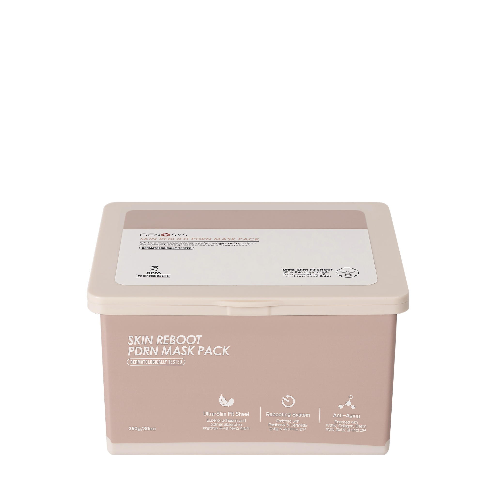
🧪 Formül & Aktif Bileşenler:
Salmon DNA (PDRN), Niasinamid, Adenozin, Centella Asiatica, Pantenol.
📏 Kabin Dozu & Süre:
1 Adet tek kullanımlık steril biyoselüloz maske örtüsü.
👐 Uygulanış Tekniği & Cihaz Uyumu:
PDRN ampul zerk edildikten sonra yüze yapıştırılır. Çene altından kulaklara doğru yukarı gerdirilerek oturtulur. 15-20 dakika Kırmızı PDT LED tüneli altında bekletilir.
🎯 Uyumlu Cilt Tipleri:
OlgunKırışıkNemsizRF Sonrası Termal Yatıştırma
⛔ HANGİ DURUMDA ASLA KULLANILMAZ? (KONTRENDİKASYON):
İltihaplı ve yoğun cerahatli püstüler aknede gözenek ağzını tıkamaması için tercih edilmez (yerine Eclado Centella maskesi uygulanır).
🗣️ MÜŞTERİ "BU MASKE YÜZÜMDE NEYİ DEĞİŞTİRECEK?" DİYE SORDUĞUNDA:
"Bu maske yoğun Somon DNA'sı ve hücresel büyüme faktörleri emdirilmiş biyolojik bir kumaştır. Cihazla açtığımız mikro kanalları neme kilitler, hücresel yenilenmeyi 3 kat hızlandırır ve kalktığınızda bebek teni gibi yumuşacık bir doku bırakır."
Probiyotik & Fermente Yaşlanma Karşıtı Modelleme Tozu
30 gr toz + 40 ml soğuk Snow Booster veya arıtılmış su.
👐 Uygulanış Tekniği & Cihaz Uyumu:
Hızlıca spatula ile homojen krem kıvamına getirilir. Tüm yüze kalın dökülür. 20 dakika sonra kenarlarından tutularak tek parça halinde kaldırılır.
🎯 Uyumlu Cilt Tipleri:
DonukBariyeri YıpranmışHassaslaşmışİnce Çizgili
⛔ HANGİ DURUMDA ASLA KULLANILMAZ? (KONTRENDİKASYON):
Danışanın kapalı alan veya nefes alma kaygısı varsa burun ve gözler kesinlikle açık bırakılır.
🗣️ MÜŞTERİ "BU TOZ MASKE NE İŞE YARIYOR?" DİYE SORDUĞUNDA:
"Fermente edilmiş biyo-aktif bitkisel enzimlerden oluşur [İsim] Hanım. Cildinizi adeta görünmez bir korse gibi sararak toparlar. İnce çizgileri doldurur, yerçekimine yenik düşen yanak dokusunu yukarı doğru askılar ve anında lifting sağlar."
1 Fındık büyüklüğünde (1.5 - 2 ml) tampon hareketlerle.
👐 Uygulanış Tekniği & Cihaz Uyumu:
HSC: Seans bitiminde veya Cryo Soğuk Çekiç öncesinde tüm yüze nem kilidi olarak sürülür.
SRP: Bipolar RF, ekstraksiyon veya soyma sonrası kızarık/tahriş olmuş odaklara lokal bariyer onarıcı olarak tamponlanır.
🎯 Uyumlu Cilt Tipleri:
Tüm TiplerÖzellikle Kuruİşlem GörmüşEritemli
⛔ HANGİ DURUMDA ASLA KULLANILMAZ? (KONTRENDİKASYON):
Aşırı yağlı ve iltihaplı ciltlerde SRP kremi tüm yüze kalın sürülmemelidir; sadece HSC tercih edilmelidir.
🗣️ MÜŞTERİ "BU KULLANDIĞINIZ YATIŞTIRICI KREMİN FAYDASI NEDİR?" DİYE SORDUĞUNDA:
"Bu krem protokolümüzün can simididir. Beta-glukan ve centella özleriyle işlem sonrasında oluşabilecek en ufak hassasiyeti, kızarıklığı dakikalar içinde siler atar; cildinize gün boyu koruyucu ipeksi bir kalkan örer."
Kabin Seans Sonu Güneş Kalkanı & Porselen Bitirici
Genosys Multi Sun Cream SPF 40 & BBC Blemish Balm Cream
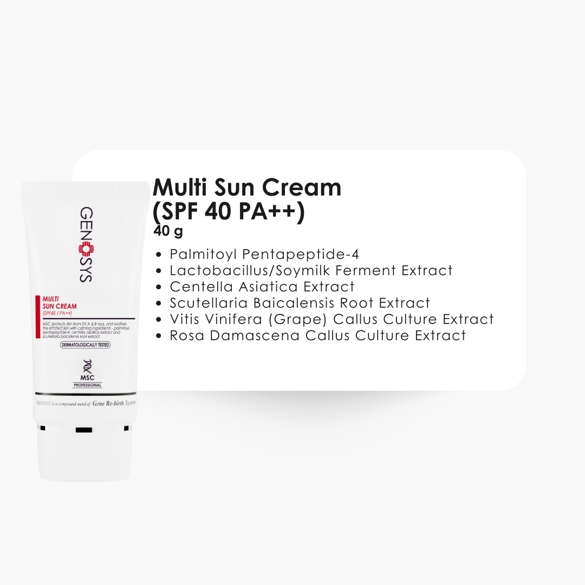
🧪 Formül & Aktif Bileşenler:
Titanyum Dioksit, Çinko Oksit, Adenozin, Niasinamid, Tokoferol (E Vitamini). Paraben ve alkol içermez.
📏 Kabin Dozu & Süre:
1.5 ml (yüz ve boyuna dairesel yedirilir).
👐 Uygulanış Tekniği & Cihaz Uyumu:
Cilt bakımının tavizsiz son adımıdır. BBC Krem ile karıştırıldığında ciltteki eritemi nötralize eder ve danışana porselen K-Beauty ışıltısı verir.
🎯 Uyumlu Cilt Tipleri:
İşlem Gören Tüm Ciltler (Zorunlu Bitiş)
⛔ HANGİ DURUMDA ASLA KULLANILMAZ? (KONTRENDİKASYON):
Akşam saatlerinde yapılan ve danışanın doğrudan uyumaya gideceği seanslarda BBC krem sürülmez; sadece HSC nemlendirici sürülüp bırakılır.
🗣️ MÜŞTERİ "BU GÜNEŞ KREMİ VE BB KREM YÜZÜMÜ TIKAR MI?" DİYE SORDUĞUNDA:
"Asla tıkamaz çünkü medikal formüllüdür [İsim] Hanım. Cildinizi güneşin yaşlandırıcı UV ışınlarından korurken gözenekleri tıkamadan ton eşitsizliklerini eşitler. Buradan çıktığınızda fondötene ihtiyaç duymadan filtre gibi duru bir güzellikle gününüze devam edebilirsiniz."
Kore Papain & Bromelain Enzimatik Peeling Tozu
Eclado Enzyme Deep Cleanser Pure Powder
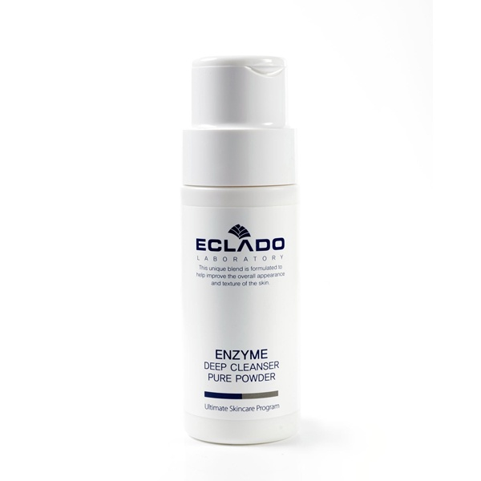
🧪 Formül & Aktif Bileşenler:
Papain (Papaya meyvesi enzimi), Bromelain (Ananas enzimi), Allantoin, Mısır nişastası.
📏 Kabin Dozu & Süre:
1 Çay Kaşığı toz + 5 ml ılık su veya Snow Booster.
👐 Uygulanış Tekniği & Cihaz Uyumu:
Cam kasede yelpaze fırçayla köpürtülür. Tüm yüze ve boyuna sürülür. Buhar makinesi altında 5-7 dakika bekletilir. Keratin bağları erir, komedonlar yumuşar.
🎯 Uyumlu Cilt Tipleri:
Yağlı / AkneliKomedonluKuru / PullanmışLekeli
⛔ HANGİ DURUMDA ASLA KULLANILMAZ? (KONTRENDİKASYON):
DİKKAT: Kılcal damarı çatlamış (kuperozlu/rozasealı) ciltte BUHAR ALTINDA BEKLETİLMEZ! (Buharsız oda sıcaklığında 5 dk bekletilip yıkanmalıdır).
🗣️ MÜŞTERİ "BU TOZ PEELING CİLDİMİ ÇİZER Mİ?" DİYE SORDUĞUNDA:
"Asla çizmez çünkü içinde tanecik yoktur [İsim] Hanım. Papaya ve ananas meyve enzimlerinden üretilmiştir; buhar altında ölü deri bağlarını doğal olarak eritir. Cildinizi tahriş etmeden pürüzsüzleştirir."
8 - 10 ml Centella Maske kalın fırça tabakası halinde.
👐 Uygulanış Tekniği & Cihaz Uyumu:
Ekstraksiyon, vakum ve yüksek frekanstan hemen sonra sürülür. Mavi PDT LED (415nm) altında 15 dakika bekletilir. Tüm kızarıklığı ve şişliği 10 dakikada söndürür.
🎯 Uyumlu Cilt Tipleri:
YağlıAkneliGeniş GözenekliEritemli / Reaktif
⛔ HANGİ DURUMDA ASLA KULLANILMAZ? (KONTRENDİKASYON):
Çay ağacı yağına bilinen aşırı hassasiyeti olan kişilerde kullanılmaz.
🗣️ MÜŞTERİ "BU CENTELLA VE TONİK YAĞLANMAYI ENGELLER Mİ?" DİYE SORDUĞUNDA:
"Kesinlikle engeller. İçerdiği Centella Asiatica bitkisi cildin aşırı sebum üretimini kontrol altına alır, gözenekleri sıkılaştırır ve gün içinde parlamayı sıfıra indirir."
Alpha-Arbutin & AHA Melanin Baskılayıcı Leke Açıcı Krem
Eclado Melaser Turn Over Cream
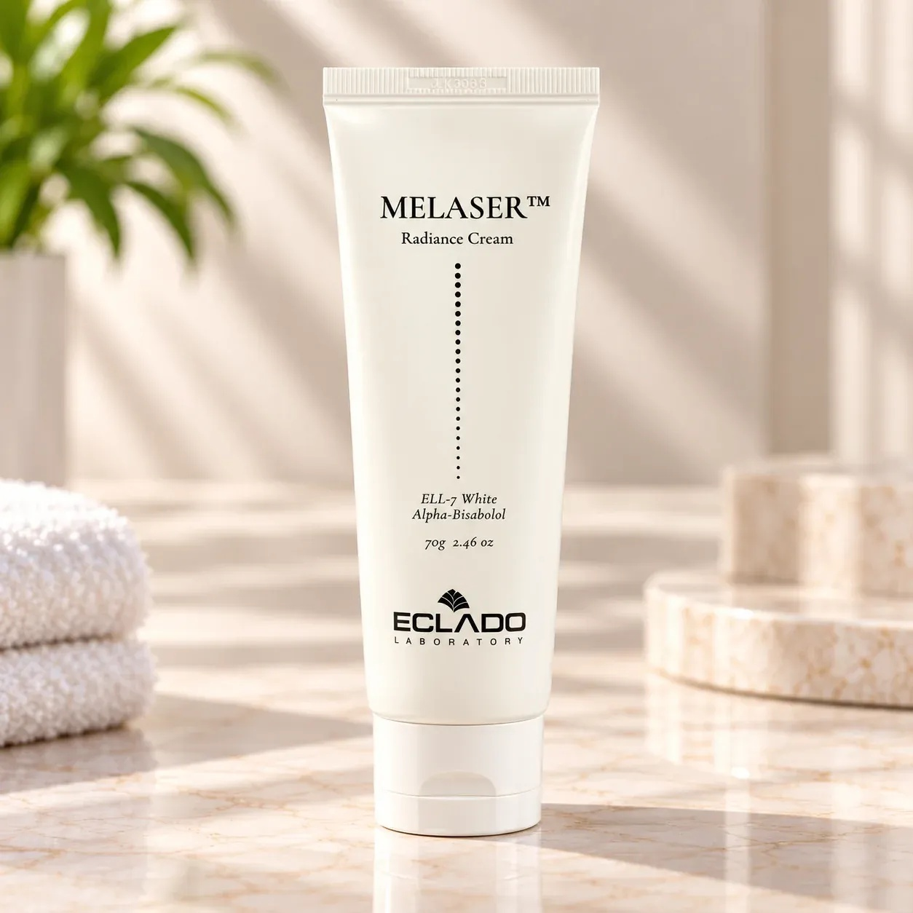
🧪 Formül & Aktif Bileşenler:
Alpha-Arbutin (%2), Glikolik Asit (AHA), Niasinamid, Meyan Kökü Ekstresi (Glabridin).
📏 Kabin Dozu & Süre:
2 - 3 ml leke odaklarına veya tüm yüze.
👐 Uygulanış Tekniği & Cihaz Uyumu:
Temiz ve soyulmuş cilde sürülür. Mormed Ultrasound Kesikli Modda (Pulsed 1.2 W/cm²) 7 dakika boyunca lekelere tamponlanır. Yeşil PDT LED (525nm) ile kombine edilir.
⛔ HANGİ DURUMDA ASLA KULLANILMAZ? (KONTRENDİKASYON):
HAYATİ KONTRENDİKASYON: Seans sonrasında tatile gidecek, solaryuma girecek veya yoğun güneşe maruz kalacak danışana ASLA UYGULANMAZ! Genosys EZ CO2 ile aynı gün üst üste sürülmez. Hassas/rozasealı ciltlere sürülmez (glikolik asit yakar).
🗣️ MÜŞTERİ "BU KREM LEKELERİME İYİ GELİR Mİ?" DİYE SORDUĞUNDA:
"Tam da güneş ve sivilce lekeleri için özel formüle edilmiştir [İsim] Hanım. Cildin melanin pigmenti dağılımını düzenler ve hücre yenilenme hızını gençlik seviyesine çekerek lekelerin rengini seans seans açar."
Kuru ve nemsiz ciltlerde masaj bazı olarak kullanılır. Sıcak çekiç veya Ultrasound probunun ciltte kaymasını sağlar. Cilde ayna gibi cam ışıltısı verir.
🎯 Uyumlu Cilt Tipleri:
KuruNemsizMatOlgun Ciltler
⛔ HANGİ DURUMDA ASLA KULLANILMAZ? (KONTRENDİKASYON):
Yoğun iltihaplı, cerahatli kistik aknesi olan ciltlere masaj kremiyle sürtünme yapılmaz (bakteri tüm yüze yayılır).
🗣️ MÜŞTERİ "BU MASAJ KREMİ YÜZÜMDE NEYİ SAĞLIYOR?" DİYE SORDUĞUNDA:
"Bu kremle yaptığımız lenf drenaj masajı yüzünüzde biriken ödemi ve toksinleri atar. Çene hattınızı keskinleştirirken cildinize 'su ışıltısı' dediğimiz taze ve canlı bir dolgunluk kazandırır."
Büyük Boy Kabin Aljinat Oklüzif Toz Maskeleri
BK Hydro Jelly Maskeler (Antioxidant Goji & Ageless Jaising 500g)
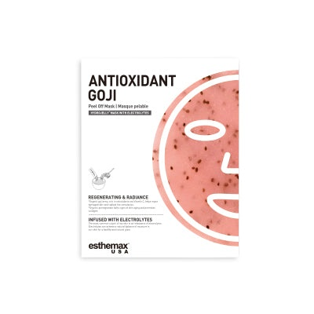
🧪 Formül & Aktif Bileşenler:
Goji Berry (Kurt Üzümü - yüksek C vitamini), Panax Ginseng kök özü, Sodyum Aljinat, Diatomit.
📏 Kabin Dozu & Süre:
25 - 30 gr toz + 40 ml soğuk tonik veya arıtılmış su.
👐 Uygulanış Tekniği & Cihaz Uyumu:
Lastik kapta hızlıca çırpılır. Göz kapakları ve dudaklar dahil kalın tabaka halinde sürülür. 20 dakika sonra tek kalıp olarak soyulur. Alttaki serumların buharlaşmasını %100 engeller.
⛔ HANGİ DURUMDA ASLA KULLANILMAZ? (KONTRENDİKASYON):
Astımı veya panik atağı olan danışanlarda burun ve ağız kesinlikle açık tutulmalıdır.
🗣️ MÜŞTERİ "BU JÖLE GİBİ MASKE NE YAPIYOR?" DİYE SORDUĞUNDA:
"Bu organik alginat maske cildinizin üzerinde soğuk bir vakum kalkanı oluşturur. Altına sürdüğümüz somon DNA'sının buharlaşmasını engelleyip doğrudan gözeneklerin en derin katmanına hapseder. Çıkarırken cildinizden tüm yorgunluğu alıp götürür."
Çift Moleküler Hyaluronik Asit, Provence Lavanta Yağı, Aljinat, Papain.
📏 Kabin Dozu & Süre:
30 gr toz + 45 ml soğuk su.
👐 Uygulanış Tekniği & Cihaz Uyumu:
Ekstraksiyon veya vakum seansı sonrası cildi serinletip kızarıklığı düşürmek için dökülür. Üzerine Kırmızı veya Mavi LED 15 dakika verilir.
🎯 Uyumlu Cilt Tipleri:
HA Whiten: Pullanmış, nemsiz ciltlerLavender: Kızarık, tahriş olmuş, akneli ciltler
⛔ HANGİ DURUMDA ASLA KULLANILMAZ? (KONTRENDİKASYON):
Açık cerrahi kesiler üzerine uygulanmaz.
🗣️ MÜŞTERİ "BU LAVANTA VE BEYAZLATICI JEL MASKENİN ETKİSİ NEDİR?" DİYE SORDUĞUNDA:
"Provence lavantası cildinizi ve zihninizi sakinleştirirken, saf hyaluronik asit nem depolarınızı tamamen doldurur. Cildinizi ışıl ışıl aydınlatır ve ton eşitsizliklerini dengeler."
Dubai Mumya Maske, Dr Lift Alçı, High Life Jel, Bioaqua & First Dating
Özel Maskeler & İletken Jeller Seti
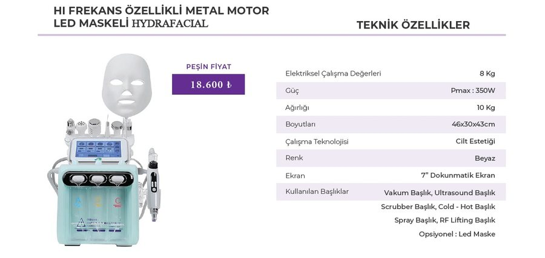
🧪 Formül & Aktif Bileşenler:
High Life İletken Jel (RF/Ultrasound için), Dubai Mumya ve Dr Lift Alçı (Termal lifting), Bioaqua Aktif Karbon (Burun bandı), First Dating 15g Saşeler (Gold, Kiwi, Cherry).
High Life Jel: RF Lifting ve Ultrasound yapılmadan önce cilde zorunlu sürülür. Jelsiz RF asla yapılmaz!
Dubai Mumya Maske: Somon DNA sürüldükten sonra gazlı bez üstünden çeneden yukarı bandajlanır; donarken cildi yukarı toplar.
🎯 Uyumlu Cilt Tipleri:
High Life Jel: RF ve Ultrasound yapılan tüm ciltlerDubai Mumya: Sarkmış çene hattıBioaqua: Sadece burun
⛔ HANGİ DURUMDA ASLA KULLANILMAZ? (KONTRENDİKASYON):
Bioaqua siyah nokta maskesi TÜM YÜZE ASLA SÜRÜLMEZ! Sadece burun üstüne sürülür (tüm yüzde kıl köklerini yolup tahriş eder). Jelsiz RF lifting ASLA yapılmaz (cildi yakar).
🗣️ MÜŞTERİ "BU SÜRDÜĞÜNÜZ ŞEFFAF JEL NE İŞE YARIYOR?" DİYE SORDUĞUNDA:
"Bu jel cihazımızın radyofrekans ve ultrasonik ses dalgalarının cildinize acı vermeden, homojen ve derin kolajen tabakasına kadar güvenle iletilmesini sağlayan medikal bir iletken köprüdür."
Makro Cilt Teşhisi
Cilt Tipleri Nasıl Anlaşılır & Hangi Ürünle Müdahale Edilir?
Danışan stüdyoya girdiğinde cildine baktığınızda doku yapısını aşağıdaki yüksek çözünürlüklü klinik karşılaştırmayla anında sınıflandırın:
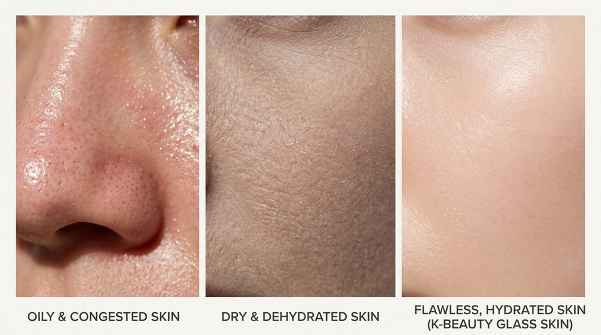
Klinik Karşılaştırma
Yağlı & Komedonlu vs. Kuru & Nemsiz vs. Kore Glass Skin
Sol: Tıkalı gözenekler, sebum parlaması • Orta: Pul pul dökülme, mikro çatlaklar • Sağ: İdeal ışıltılı nem bariyeri
Danışanın Yüzünde Ne Görüyorsanız, Doğru Hamle:
🔍 1. Burunda Siyah Nokta & Aşırı Sebum:
Ne Yapılmalı? Asla kuru sıkma yapmayın. Eclado Enzim Peeling ile buhar verin ➔ Raha Med Negatif (-) Dezan akımı ile sebumu sabunlaştırın ➔ Mormed Scrubber spatulayı 45° açıyla iterek pürüzsüzce boşaltın ➔ BHA solüsyonu ile vakumlayın.
Ürün: Eclado Enzyme + BHA Solüsyonu
🔍 2. Yanaklarda Pul Pul Dökülme & Matlık:
Ne Yapılmalı? Cilt nemsizlikten bariyerini kaybetmiştir. Tanecikli peeling yasaktır. Chamber A (Laktik Asit) ile çok düşük vakumda hafif geçiş ➔ Pozitif (+) İyontoforez ile hyaluronik asidi içeri itin ➔ Dr-Meinaier Hyaluronik Jelly Mask ile kapatın.
Ürün: Genosys Snow Booster + HA Jelly
🔍 3. Yanaklarda Kılcal Damar (Kızarıklık):
Ne Yapılmalı?Vakum ve sıcak buhar KESİNLİKLE YASAKTIR! Oksijen tabancasıyla soğuk Snow Booster sisi püskürtün ➔ Eclado Centella Maske sürün ➔ Mormed Cryo Soğuk Çekiç (2°C) ile tamponlayarak damarları sakinleştirin.
Ürün: Eclado A.C. Centella Mask + Soğuk Çekiç
🔍 4. Çene Hattında Sarkma & Derin Çizgi:
Ne Yapılmalı? Bipolar RF probuyla çeneden kulağa doğru dairesel lifting hareketiyle dokuyu 41°C'ye ısıtın ➔ Hemen ardından Genosys Somon DNA (PDRN) damlatıp 1MHz Ultrasound ile dermise kilitleyin.
Ürün: Genosys Bio-Meso PDRN Somon DNA
🗣️ MÜŞTERİ "BU MAKİNE VE İŞLEM NE İŞE YARIYOR, YÜZÜME NE YAPIYOR?" DİYE SORDUĞUNDA:
"Şu an cildinizdeki tüm gözenekleri cerrahi olmayan hidro-vorteks teknolojisiyle mikron düzeyinde yıkıyoruz [İsim] Hanım. Sıradan bakımlarda tırnakla veya iğneyle sıkma yapılırken gözenek duvarları yırtılır ve sonrasında daha da genişler. Bu başlık ise spiral bir su girdabıyla cildinize laktik asit zerk ederken aynı anda siyah noktaları ve sebum tıkaçlarını vakumla çekip alıyor. Birazdan cam haznede çıkan partikülleri size de göstereceğim; cildiniz hem derinlemesine nefes alacak hem de tek seansta pürüzsüzleşecek."
Hızlı Reçete Motoru
Cilt Tipine Tıklayın, Protokolü Anında Görün
Bölgesel Müdahale Rehberi
İnteraktif Yüz Haritası: Hangi Bölgeye Hangi Başlık?
Yüzün farklı bölgeleri tamamen farklı dokusal özelliklere sahiptir. Tıkla ve o bölgeye özel başlık, açı ve ürün reçetesini incele:
Cihaz & Donanım Masterclass
Mormed 7'si 1 Arada & Raha Med: Başlık Tutuş Açıları, Port Bağlantıları ve Ürün Eşleşmesi
Yanlış açıyla tutulan başlık ya morluk (peteşi) yapar, ya epidermisi çizer ya da termal yanık oluşturur.
Aşağıdaki 7 başlığın her biri için tutuş açısı, cilde temas şartı,
makinedeki hortum/jak soket portu ve birlikte kullanılacak kabin ürünü eksiksiz olarak tanımlanmıştır:
🔌 Mormed 7-in-1 Platformu Ön & Arka Panel Port Soket Haritası
1. Port (Sol Alt): Solüsyon Hazneleri (A/B/C) Hortum: Şeffaf silikon emiş hattı. İşlev: Chamber A (Laktik Asit), Chamber B (Salisilik Asit), Chamber C (Temizleme suyu) seçici vanası.
2. Port (Sol Üst): Aqua Vortex Vakum Hortumu Soket: Döner kilitli çift kanallı pnömatik jak. İşlev: Eşzamanlı sıvı püskürtme ve geri emiş vakumu (0.4 - 0.7 bar).
3. Port (Orta Sol): Scrubber Spatula Jakı Soket: 4-pin altın kaplama elektrik iletken soket. İşlev: 28.000 Hz ultrasonik piezo titreşim sinyali.
4. Port (Orta Sağ): Bipolar / Multipolar RF Soketi Soket: Vidalı korumalı 2-pin RF güç jakı. İşlev: 1-2 MHz yüksek frekanslı termal derin doku enerjisi (40-42°C).
5. Port (Sağ Üst): Kriyoterapi Soğuk Çekiç Soketi Soket: Yüksek akım peltier termoelektrik portu. İşlev: Anında -5°C buz şoku ve kılcal damar daraltma.
6. Port (Sağ Alt): Oksijen Kompresör Hava Jakı Hortum: Yüksek basınçlı poliüretan hava hortumu. İşlev: 10-15 cm mesafeden tonik ve ampulleri nano-aerosole çevirme.
1. Mormed Aqua Peeling Vakum Vortex BaşlığıHedef: Spiral Su Girdabıyla Derin Gözenek Süpürme
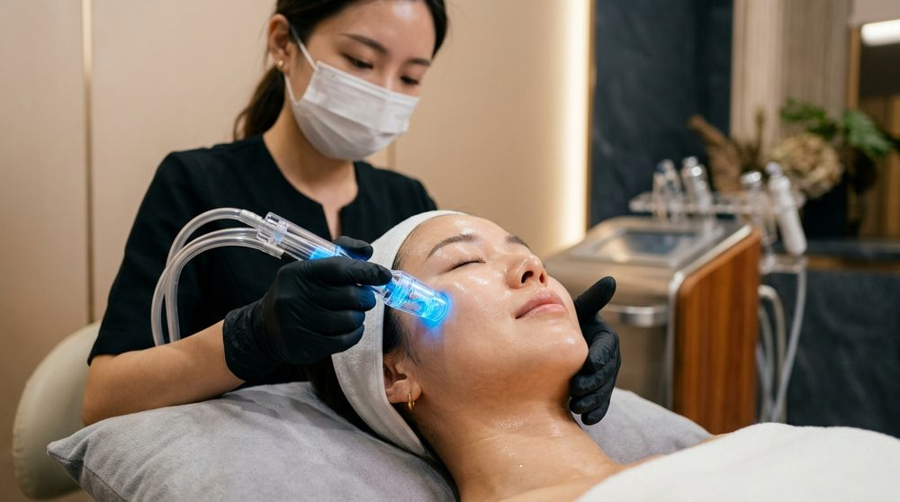
Görsel Analiz: Vortex spiral uç cilde tam 90° dik yapışmalı, T-bölgesinde yukarı doğru kaydırılmalı ve tek noktada asla 2 saniyeden fazla sabit tutulmamalıdır.
📐 Tutuş Açısı & Baskı Şiddeti:
Cilt yüzeyine tam 90° dik (perpendicular) temas ettirilir. Başlığı eğik tutmak vakum kaçağı yapar ve cildi çizer. Baskı kuvveti sıfır olmalıdır; başlık yalnızca cilt üzerinde kaydırılır (glide).
🎯 Cilde Mesafe & Vakum Kilidi:
Cilde sıfır mesafe (tam vakum kilidi). Çene ucundan kulak önüne, burun kanatlarından şakaklara doğru hat boyunca kesintisiz çekilir.
🧴 Birlikte Kullanılacak Kabin Ürünü:
Kuru ciltte Mormed Chamber A (Laktik Asit), yağlı ve komedonlu ciltte Mormed Chamber B (Salisilik Asit). Asla kuru veya solüsyonsuz cilde uygulanmaz!
⚠️ Kritik Tehlike Uyarısı:
Kuperozlu (kılcal damarları çatlamış) veya rozasealı yanaklarda vakum gücü KESİNLİKLE uygulanmaz! Tek noktada durulursa ciltte morarma (peteşi) oluşur.
🗣️ MÜŞTERİ "BU VAKUM BAŞLIĞI NE YAPIYOR, ACITIR MI?" DİYE SORDUĞUNDA:
"Kesinlikle canınızı acıtmaz [İsim] Hanım; spiral bir su girdabıyla laktik asit zerk edip gözeneklerinizin dipindeki tüm siyah noktaları vakumla süpürüyoruz. Cildinizde sıfır tahrişle derin bir nefes alma hissi oluşturuyoruz."
2. Ultrasonic Scrubber Peeling Spatulası (28 kHz Ses Dalgası)Hedef: Siyah Nokta, Sebum & Ölü Keratin Fırlatma
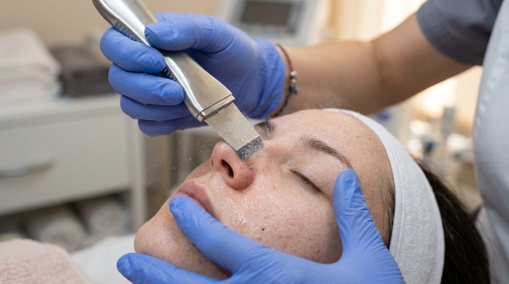
Görsel Analiz: Paslanmaz çelik spatula ucu cilde tam 45° yatık açıyla sürülür. Cilt yüzeyindeki sıvı mikro-aerosol buhara dönüşerek gözenek kirlerini dışarı püskürtür.
📐 Tutuş Açısı & Hareket Yönü:
Cilt ile spatula arasında tam 45 derecelik açı korunur. Spatulanın kavisli ucu öne bakacak şekilde, aşağıdan yukarıya ve merkezden dışa doğru itilir.
💧 Cilde Mesafe & Nemlilik Şartı:
Tam temas. Ancak cilt yüzeyi MUTLAKA ıslak olmalıdır! Spatula kuru cilde değerse titreşim cildi sıyırıp mikro-çizikler açar.
🧴 Birlikte Kullanılacak Kabin Ürünü: Genosys Snow Booster Kabin Toniği veya ılık buharla köpürtülmüş Eclado Enzyme Deep Cleanser Pure Powder.
⚡ Cihaz & Port Ayarı:
Ön panel 4-pin Scrubber jakına takılır. T-bölgesinde 'Continuous' (sürekli) modda 6-8 dakika çalışılır.
🗣️ MÜŞTERİ "BU DEMİR SPATULA CİLDİMİ ÇİZER Mİ, NE YAPIYOR?" DİYE SORDUĞUNDA:
"Asla çizmez; saniyede 28.000 ses dalgası titreşimi üretir. Cildinizdeki tonik sıvısını mikro buhara dönüştürerek gözeneklerdeki katılaşmış yağı ve ölü deriyi dışarı fırlatır."
Görsel Analiz: RF elektrotları cilde 90° dik oturur, iletken jel tabakası üzerinde sürekli dairesel ve yukarı yönlü lifting hareketleriyle dermis 40°C - 42°C'ye ısıtılır.
📐 Tutuş Açısı & Masaj Yörüngesi:
Cilde 90° dik temas. Çeneden kulak memesine, nazolabial kıvrımdan şakaklara doğru spiral yukarı dairesel hareketler.
🔥 Sıcaklık Hedefi & Bekleme Yasağı:
Başlık tek bir noktada KESİNLİKLE sabit bekletilmez! Cilt yüzeyi kızılötesi termometreyle ölçüldüğünde 40°C - 42°C aralığına ulaşınca kolajen boyu kısalır ve lifting gerçekleşir.
🧴 Birlikte Kullanılacak Kabin Ürünü: İletken Hyaluronik Jel veya Eclado Shining Moisture Masaj Kremi. Yağsız veya kuru cilde asla temas ettirilmez.
🚫 Kesin Kontrendikasyon:
Kalp pili taşıyanlarda, hamilelerde, metal diş implantının tam üzerindeki çene kemiğinde ve aktif iltihaplı kistik aknelerin üzerinde kullanılmaz!
🗣️ MÜŞTERİ "BU SICAK BAŞLIK YÜZÜMDE NEYİ SIKILAŞTIRIYOR?" DİYE SORDUĞUNDA:
"Radyofrekans dalgalarıyla cilt altındaki kolajen liflerinizi tam 41-42 dereceye ısıtıyoruz. Isınan kolajen boyu kısalır ve toparlanır; çene hattınızda ve yanaklarınızda ameliyatsız lifting sağlar."
4. Kriyoterapi Soğuk Çekiç (Cold Hammer -5°C Buz Başlığı)Hedef: Gözenek Kilitleme, Ödem Azaltma & Termal Şok Yatıştırma
📐 Tutuş Açısı & Presleme Şekli:
Düz çelik plaka cilde tam temas edecek şekilde 90° dik presleme ve dairesel yatıştırma.
❄️ Ne Zaman ve Hangi Adımda Kullanılır?
RF termal seansı, kimyasal peeling veya ekstraksiyon bittikten hemen sonra. Açılan gözenekleri şoklayarak kilitler ve kızarıklığı yok eder.
🧴 Birlikte Kullanılacak Kabin Ürünü: Genosys Intensive Hydro Soothing Jel (HSC) veya Soothing Repair Post-Cream (SRP). Soğuk başlık jelle birleştiğinde danışana lüks bir spa ferahlığı verir.
⏱️ Seans Süresi:
Tüm yüze eşit şekilde 5 ila 7 dakika uygulanır.
🗣️ MÜŞTERİ "BU BUZ GİBİ BAŞLIK NEDEN KULLANILIYOR?" DİYE SORDUĞUNDA:
"Eksi 5 derecelik kriyoterapi başlığımız açtığımız tüm gözenekleri şoklayarak kilitler. İşlem sonrasındaki tüm kızarıklığı ve ödemi anında yok edip cildinize buz gibi bir ferahlık verir."
5. Oksijen Püskürtme Tabancası (Airbrush Nano-Mist)Hedef: Derin Epidermal Oksijenleme & Serum Zerk Etme
📐 Mesafe Kuralı (HAYATİ ÖNEMDE):
Cilde KESİNLİKLE DEĞDİRİLMEZ! Tabancanın ucu ile cilt arasında tam 10 ila 15 cm hava mesafesi bırakılır. 45° açıyla hafif dairesel süpürülür.
💨 Pnömatik Mekanizma:
Yüksek basınçlı oksijen akımı, haznedeki sıvıyı mikron düzeyinde parçalayarak gözeneklerin en dip tabakasına enjekte eder.
🧴 Birlikte Kullanılacak Kabin Ürünü:
Hazneye 3 ml Genosys Snow Booster Kabin Toniği + 1 ml Genosys Bio-Meso PDRN Somon DNA Ampulü karıştırılarak konur.
⏱️ Seans Süresi:
Tüm yüze ve dekolteye 4 ila 5 dakika homojen sisleme yapılır.
🗣️ MÜŞTERİ "BU HAVA TABANCASI NE SIKIYOR?" DİYE SORDUĞUNDA:
"15 santim mesafeden yüksek basınçlı saf oksijen akımıyla Genosys Somon DNA ve tonik karışımını cildinize nano-sis olarak zerk ediyoruz. Gözeneklerinizin en derin tabakası neme doyar."
🗣️ MÜŞTERİ "BU CAM ÇUBUKTAKİ IŞIK VE ÇITIRTI NEDİR?" DİYE SORDUĞUNDA:
"Havadaki oksijeni anında saf ozona (O3) dönüştüren cam elektrottur. Ekstraksiyon yaptığımız gözeneklerdeki bakterileri saniyeler içinde öldürerek sivilce oluşumunu kökten engeller."
>6. Raha Med Yüksek Frekans (High Frequency) Ozon Cam ElektrotlarHedef: O3 Ozon Gazıyla Bakteri Yok Etme & İltihap Kurutma
📐 Prob Tipleri & Kullanım Açıları:
• Mantar Prob: Yanak ve alın gibi geniş alanlarda cilde tam temasla dairesel kaydırılır.
• Noktasal / Kaşık Prob: Sivilce üzerinde 1-2 mm havada tutularak mikro-kıvılcım (sparking) çaktırılır.
⚡ Ozonlama Prensibi:
Havadaki oksijeni (O2) ozona (O3) dönüştürür. P.acnes bakterilerini temas ettiği ilk 3 saniyede yok eder.
🧴 Birlikte Kullanılacak Malzeme: Kuru gazlı bez! Yüksek frekans nemli veya jel sürülmüş cilde uygulanmaz; kuru bez üzerinden elektrik atlaması sağlanır.
⏱️ Seans Süresi:
Ekstraksiyon sonrası 3 ila 4 dakika lokal dezenfeksiyon.
7. PDT LED Fototerapi Işık Tüneli (7 Renk Spektrum)Hedef: Hücresel ATP Sentezi, Kolajen Tetikleme & Cilt Yenileme
🔴 Kırmızı LED (640 nm):
Fibroblastları uyararak kolajen ve elastin üretimini tetikler. İnce çizgi ve anti-aging seanslarında 20 dakika.
🔵 Mavi LED (415 nm):
Akne bakterilerinin ürettiği porfirini parçalar. Aktif sivilce ve yağlı cilt protokollerinde 15 dakika.
🟢 Yeşil LED (525 nm):
Melanosit hücrelerini dengeler. Güneş lekeleri, hiperpigmentasyon ve kızarıklık yatıştırmada 15 dakika.
🟡 Sarı LED (590 nm):
Lenfatik drenajı hızlandırır, hücre enerjisini artırır, detoks sağlar.
💡 Altın Kural: PDT LED Tüneli danışanın yüzünün üzerine 15-20 cm yükseklikte konumlandırılır. Danışanın gözlerine MUTLAKA silikon lazer koruyucu gözlük takılmalıdır! Altına sürülen BK veya Dr-Meinaier Hydrojelly maskeler ışık geçirgendir ve emilimi 3 katına çıkarır.
Danışan sedyede yatarken sorulan sorular şüphe değil, uzmanlık ve güven arayışıdır.
Gülşah Hanım'ın ağzından dökülecek son derece özgüvenli, bilimsel, samimi ve lüks yanıt kalıpları:
SORU 1
"Gülşah Hanım, bu makine tam olarak ne yapıyor yüzüme?"
🗣️ Gülşah Hanım'ın Yanıtı: "Şu an cildinizdeki tüm gözenekleri cerrahi olmayan hidro-vorteks teknolojisiyle mikron düzeyinde yıkıyoruz [İsim] Hanım. Sıradan bakımlarda tırnakla veya iğneyle sıkma yapılırken gözenek duvarları yırtılır ve sonrasında daha da genişler. Bu başlık ise spiral bir su girdabıyla cildinize laktik asit zerk ederken aynı anda siyah noktaları ve sebum tıkaçlarını vakumla çekip alıyor. Birazdan cam haznede çıkan partikülleri size de göstereceğim; cildiniz hem derinlemesine nefes alacak hem de tek seansta pürüzsüzleşecek."
SORU 2
"Yüzüme sürdüğünüz bu serum ne işe yarayacak? Neden bu kadar özel?"
🗣️ Gülşah Hanım'ın Yanıtı: "Bu ürün Kore medikal estetiğinin en üst segmenti olan Genosys PDRN Somon DNA'sı ampulü. İçerisinde tam 60.000 ppm saf poliribonükleotid var. Yani cildinize sıradan bir nemlendirici sürmüyoruz; cildinizin kendi genç kolajen liflerini sentezlemesini sağlayan bir hücre aşısı yapıyoruz. Birazdan ultrasonik ses dalgası başlığımızla bunu gözeneklerinizin en derin katmanına iteceğiz. Aynaya baktığınızda o cam cilt ışıltısını doğrudan bu serum sağlayacak."
SORU 3
"Canım yanar mı, acıtır mı? Vakum çekerken acı hissedecek miyim?"
🗣️ Gülşah Hanım'ın Yanıtı: "Kesinlikle hiçbir acı hissetmeyeceksiniz, aksine çok ferahlatıcı, serin bir su masajı gibi gelecek. Biz Linail Beauty'de cildi travmatize eden hiçbir agresif metot kullanmıyoruz. Vakum seviyesini tamamen sizin cilt hassasiyetinize göre mikro düzeyde ayarlıyorum. İşlemin sonunda yapacağımız eksi 5 derecelik kriyoterapi ve LED terapiyle de cildinizi tamamen dinlendirip pamuk gibi bir hisle sizi uğurlayacağız."
SORU 4
"Kaç seans gelmeliyim, yüzüm ne zaman parlar?"
🗣️ Gülşah Hanım'ın Yanıtı: "O kristal parlaklığı ve bebeksi yumuşaklığı bugün buradan kalktığınız ilk saniyede aynada göreceksiniz. Ancak kalıcı gözenek daralması, leke açılması ve kolajen dolgunluğu için cildin 28 günlük hücre yenilenme döngüsünü takip etmemiz gerekir. Bu yüzden ayda bir düzenli olmak üzere 3 ila 4 seanslık bir protokol kürü tamamladığımızda cildiniz kendi kendini koruyan mükemmel bir bariyer kazanmış olur."
SORU 5
"İşlemden sonra yüzüm kızarır mı? Akşam dışarı çıkabilir miyim, makyaj yapabilir miyim?"
🗣️ Gülşah Hanım'ın Yanıtı: "Hiç endişelenmeyin, bizim protokolümüz sosyal hayatı kısıtlayan soyucu bakımlardan değildir. Protokolümüzün finalinde uyguladığımız soğuk çekiç ve Genosys Soothing Repair onarıcı krem sayesinde cildinizde travmatik kızarıklık veya morluk kalmaz; sadece spordan yeni çıkmış gibi taze, pembe bir canlılık olur. Bugün gözeneklerinizin temiz havanın tadını çıkarması için fondöten sürmemenizi, sadece güneş koruyucumuzla gezmenizi öneririm; yarın sabah ise dilediğiniz gibi makyajınızı yapabilirsiniz."
SORU 6
"Neden sıradan bir salonda 500-1000 liraya yapılan bakım yerine burada klinik protokol yaptırmalıyım?"
🗣️ Gülşah Hanım'ın Yanıtı: "Çok haklı ve yerinde bir soru. Sıradan salonlarda yapılan bakımlar maalesef market tipi alkollü ürünler ve standart buhar makineleriyle cildin doğal koruyucu asit mantosunu yırtar; iki gün sonra cilt tepki olarak daha fazla yağ ve sivilce üretir. Biz Linail Beauty'de FDA onaylı 7'si 1 arada medikal teknolojiyi, Kore dermatoloji standardı Genosys ve Eclado farmasötik etken maddeleriyle harmanlıyoruz. Burada yapılan işlem bir 'yüz yıkama' değil, cildin alt dokusunu yapılandıran medikal bir klinik tedavidir."
💎 Seans Sonu Ev Devam Ürünü Reçetelendirme & Paket Satış Formülü
Danışan sedyeden kalkıp aynaya baktığında gözlerindeki hayranlık anında şu cümle kurulur: "[İsim] Hanım, bugün cildinize tam 3.500 liralık profesyonel aktif yükledik. Bu harika sonucu 30 gün boyunca korumak ve evde de bu ışıltıyı sürdürmek için cildinize sadece 2 temel ürün reçete ediyorum: Akşamları gözeneklerinizi oksijenle temizleyecek Genosys Snow O2 ve gündüz kolajeninizi UV ışınlarından koruyacak Genosys Multi Sun SPF 40. Bu ikiliyi düzenli kullandığınızda bir sonraki seansımıza kadar cildiniz hiç matlaşmayacak."
Piyasa Analizi & Gelir Motoru
Ataşehir & Türkiye Trend Klinik Protokolleri (Kabin Envanteriyle Reçeteler)
Google Trends, Instagram ve Ataşehir VIP güzellik kliniklerinin en çok randevu alan 5 amiral gemisi protokolü;
elimizdeki Mormed 7'si 1 Arada, Raha Med, Genosys ve Eclado kabin ürünleriyle mililitre, dakika ve cihaz ayarı bazında reçetelendirilmiştir:
1. Kore "Cam Cilt" (Glass Skin) Kristal Işıltı & Derin Nem Protokolü
⏱️ 75 Dakika💰 Seans: 3.500 ₺
Hedef Kitle: Nemsiz, donuk, gözenekleri belirgin, pürüzlü ve fondötensiz ayna gibi parlamak isteyen danışanlar. (Önerilen Kür: 3 Seans, 21 günde bir).
Adım 1-2: Oksijenli Arındırma & Enzim
• Genosys Snow O2 köpükle 3 dk dairesel temizleme.
• Eclado Enzim Pudra Peeling buhar altında 7 dk bekletilerek ölü keratin bağları eritilir.
Adım 3-4: Scrubber & Aqua Vortex
• Mormed Scrubber (45° açı) ile ıslak ciltte 6 dk komedon süpürme.
• Mormed Aqua Peeling Vakum (Chamber A Laktik Asit) ile T-bölgesi derin vakum (8 dk).
Adım 5-6: Oksijen Sisleme & Soğuk Çekiç
• Airbrush Oksijen Tabancasıyla 10 cm'den Snow Booster + Hyaluronik serum püskürtme (5 dk).
• Kriyoterapi Soğuk Çekiç (-5°C) ile gözenekleri şoklayarak kilitleme (5 dk).
Adım 7-8: Jelly Maske & Mühürleme
• Dr-Meinaier HA Whiten Jelly Maske üzerine Yeşil LED Fototerapi (525 nm, 15 dk).
• Genosys HSC Nemlendirici Jel + Multi Sun SPF 40 ile tam koruma.
2. Hollywood Kırmızı Halı Glow (Red Carpet Anında Sıkılaşma & Parlaklık)
⏱️ 60 Dakika💰 Seans: 4.000 ₺
Hedef Kitle: Düğün, davet, sahne veya özel çekim öncesi 'ödem atma, nazolabial toparlama ve anında ışıltı' isteyen VIP müşteriler.
Adım 1-2: Nazik Temizleme & Yüzeysel Peeling
• Genosys DMR ile cilt temizliği.
• Mormed Aqua Peeling hafif vakum moduyla cildin üst ölü tabakasının süpürülmesi (6 dk).
Adım 5-6: Soğuk Çekiç & Kırmızı LED Terapi
• Kriyoterapi Soğuk Çekiç (-5°C) ile anında termal şok ve ödem tahliyesi (5 dk).
• Genosys Skin Reboot PDRN Mask Pack üzerine Kırmızı LED (640 nm, 15 dk).
Adım 7-8: Kusursuz Bitiş
• Genosys Soothing Repair Post-Cream + Multi Sun SPF 40 + Genosys BBC Blemish Balm ile filtre gibi ten.
3. Derin Gözenek Detox'u & Siyah Nokta Ekstraksiyonu (Pore-Vacuum Detox)
⏱️ 90 Dakika💰 Seans: 3.200 ₺
Hedef Kitle: Yağlı, komedonlu, akneli, geniş gözenekli ve sebum fazlası olan danışanlar. (Önerilen Kür: 4 Seans, 15 günde bir).
Adım 3-4: Dezan Akımı & Vortex Vakum
• Raha Med Negatif (-) Dezan akımıyla sebum sabunlaştırma (5 dk).
• Mormed Aqua Peeling (Chamber B Salisilik Asit) Seviye 6 vakumla komedon emişi (10 dk).
Adım 5-6: Yüksek Frekans Ozonlama & Centella
• Raha Med Yüksek Frekans Cam Elektrot (kıvılcım tekniği) ile bakterilerin öldürülmesi (4 dk).
• Eclado A.C. Centella Maskesi uygulaması.
Adım 7-8: Mavi LED & Yağsız Nemlendirme
• Mavi PDT LED Terapi (415 nm) ile 15 dk iltihap kurutma.
• Genosys Soothing Repair Krem ile tahrişsiz nemlendirme.
Hedef Kitle: 30 yaş üstü, çene hattında elastikiyet kaybı, gıdı sarkması ve nazolabial derinleşmesi yaşayan VIP danışanlar. (Önerilen Kür: 4 Seans, ayda bir).
Adım 1-2: Snow O2 & Scrubber Eksfoliasyon
• Snow O2 arındırma (3 dk).
• Scrubber Spatula 45° açı ile ölü tabakanın uzaklaştırılması (6 dk).
Adım 3-4: Multipolar RF & Somon DNA Ampulü
• İletken Jel eşliğinde Multipolar RF ile 15 dk 42°C derin dermis ısıtması.
• Genosys Bio-Meso PDRN Somon DNA (60.000 ppm) ampulünün tüm yüze sürülmesi.
Adım 5-6: Ultrasound İyontoforez & Toz Maske
• Mormed Ultrasound 1 MHz (Sürekli mod) ile PDRN moleküllerinin dermise zerk edilmesi (10 dk).
• Genosys Bio-Ferment Age Defying Toz Maske uygulaması.
Adım 7-8: Kırmızı LED & Melaser Turn Over
• Kırmızı LED Fototerapi (640 nm, 15 dk).
• Eclado Melaser Turn Over Krem ile elastikiyet mühürleme.
Hedef Kitle: Akne skarları, lekeler, solgun sigara cildi ve hücresel dolaşım bozukluğu yaşayan danışanlar. (Önerilen Kür: 5 Seans, 14 günde bir).
Adım 1-2: Snow O2 & EZ CO2 Jel Sürümü
• Snow O2 köpük temizleme.
• Genosys EZ CO2 Karboksi Jel kalın tabaka (20 ml) yüze eşit yayılır.
Adım 3-4: Bohr Reaksiyonu & Oksijen Hücumu
• Aktivatör kumaş maske yüze preslenir. CO2 gazı salınır; kan dokuya şok O2 pompalar (20 dk).
• Hafif yanma hissi normaldir, 5 dk sonra yerini serinliğe bırakır.
Adım 5-6: Soğuk Çekiç & Ageless Jaising Maske
• Jel temizlenir, Soğuk Çekiç (-5°C) ile 6 dk anında yatıştırma.
• BK Hydrojelly Ageless Jaising Maske uygulaması.
Adım 7-8: Mor LED & Genosys HSC Mühürleme
• Mor LED Terapi (400 nm, 15 dk) ile hücresel yenilenme.
• Genosys Intensive Hydro Soothing Jel + Multi Sun SPF 40 ile tam koruma.
Özel Protokol • Kırmızı Halı Seansı
Genosys EZ CO2 Karboksiterapi (Bohr Etkisi)
Mekanizma: Bohr Etkisi. Sodyum bikarbonat jel ve sitrik asitli kuru örtü birleştiğinde anında CO2 gazı açığa çıkar. Cilt yüzeyindeki yoğun CO2, kandaki hemoglobinin dokulara devasa miktarda oksijen (O2) bırakmasını tetikler. Cilt hücresel düzeyde oksijene boğulur, gözenekler anında küçülür ve belirgin bir lifting oluşur.
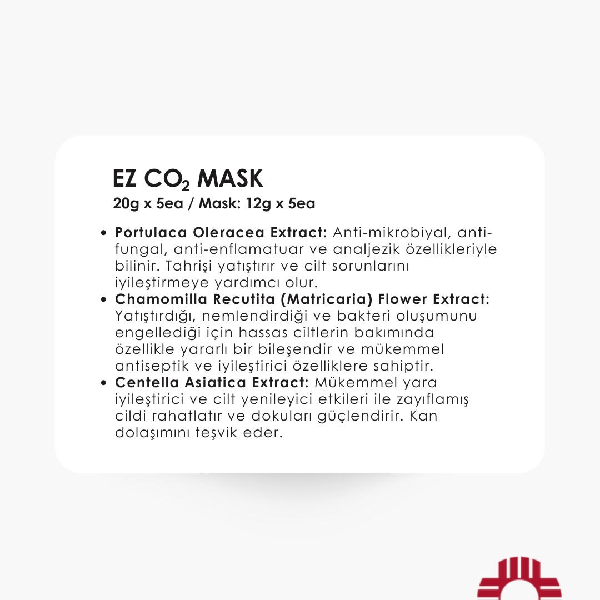
Kabin Uygulaması
EZ CO2 Jel & Maske Örtüsü ile Bohr Reaksiyonu
Jel kalın tabaka halinde sürülür, kuru maske üzerine preslenir. Hafif yanma ve çıtırtı sesi reaksiyonun başladığını gösterir.
💡 Danışana Ön Bilgilendirme Cümlesi: "Maskeyi yapıştırdığımda hafif bir ısınma, karıncalanma ve soda çıtırtısı gibi bir ses hissedeceksiniz; bu cildinizin oksijene boğulduğunu gösteren tamamen normal bir reaksiyondur, 2-3 dakika içinde tatlı bir rahatlamaya dönecektir."
Adım 1: Snow O2 ile temizlenip kurulanmış cilde EZ CO2 jel şırıngasının tamamı (20 ml) yüz ve gıdıya kalınca yayılır. 2: Aktive edici kuru maske örtüsü üzerine serilir ve avuç içleriyle bastırılır. 20 dakika bekletilir. 3: Her 3-4 dakikada bir eldivenle maske üzerine tampon baskı yapılır. 4: Jel spatula ile kazınıp süngerlerle silinir. Ciltte oluşan pembeleşme (hiperemi) doku oksijenlenmesinin kanıtıdır. 5: Üzerine Genosys PDRN Somon DNA damlatılıp Kırmızı LED tüneline alınır ➔ Cryo Soğuk Çekiçle kapatılır.
Teknoloji & Yapay Zeka Entegrasyonu
Linail Beauty İçin Çıkarabileceğimiz GitHub & AI Projeleri
Bu sistemi sadece bir doküman olarak bırakmayıp, Gülşah’ın kabinde danışanın yüzünü tabletle taratarak otomatik analiz eden, video simülasyonları üreten bir "Yapay Zeka Klinik Asistanı" haline getirmek için kullanabileceğimiz açık kaynak GitHub teknolojileri:
1. MediaPipe Face Mesh & Face-Parsing (Google AI / PyTorch)Yüz Bölgeleme & T-Bölgesi Taraması
Ne İşe Yarar? Danışanın yüzünü tabletin kamerasıyla 468 referans noktasından anında tarar. Alın, burun (T-Bölgesi), yanaklar ve çene hattını otomatik ayırır. Danışana ekranda: "Burun bölgenizde %42 sebum yoğunluğu ve kapalı komedon tespit edildi ➔ Mormon Aqua Peeling BHA protokolü öneriliyor" çıktısını verir.
Ne İşe Yarar? Makro fotoğraftan aktif püstül, açık siyah nokta, melazma lekesi veya telanjiyektazi (kılcal damar çatlağı) ayrımını %96 doğrulukla yapar. Hangi bölgeye asla vakum yapılmaması gerektiğini estetisyene sesli/görsel uyarı verir.
Ne İşe Yarar? Gülşah danışana Somon DNA ve RF Lifting satarken, ekranda cildin alt katmanlarındaki kolajen liflerinin RF ısısıyla nasıl kısaldığını ve Somon DNA'sının fibroblastları nasıl canlandırdığını 3 boyutlu hareketli simülasyonla gösterir. Danışanın ikna oranını 5 kat artırır.
4. ComfyUI + Wan 2.1 / LTX-Video Procedural Aesthetic ClipsOtomatik Video Üretim Motoru
Ne İşe Yarar? Instagram Reels için "Doğru Peeling Açısı (45°)", "Karboksiterapi Bohr Reaksiyonu", "Vortex Vakumun Siyah Noktayı Çekişi" gibi yüksek çözünürlüklü 9:16 mikro video animasyonlarını otomatik render eder. Linail Beauty'nin sosyal medyasını klinik bir otorite haline getirir.
Ne İşe Yarar? Gülşah işlem sırasında eldivenlerini çıkarmadan kabindeki mikrofona: "Danışanın cildinde rozasea var, hangi adımı atlamalıyım?" dediğinde, sistem anında sesli olarak: "Gülşah, vakum ve sıcak buharı atla; doğrudan 2°C Cryo Soğuk Çekiç ve Eclado Centella maskesine geç" yanıtını verir.
Küresel Altın Standart Klinik Cihaz Parametreleri & Linail Kabin Eşleşmesi
Beverly Hills, Zürih ve Seul’deki en prestijli dermatoloji kliniklerinin kullandığı lider cihazların çalışma frekansları, vakum akışkanlar dinamiği, empedans geri bildirim döngüleri ve hücresel kodlama şemaları çözülmüş ve Linail Beauty kabinindeki Mormed 7'si 1 Arada ile Raha Med Cellular Energy platformlarına %100 entegre edilmiştir.
Cihaz & Üretici
Fiziksel Modalite
Hassas Kodlama & Parametre Değerleri
Linail Kabin Protokol Karşılığı
HydraFacial Syndeo™ BeautyHealth USA
Vortex-Fusion Spiral Vakum Akışkanlar Dinamiği
-10 kPa ila -85 kPa (-0.1 ila -0.85 Bar) negatif basınç; 2.2 ml/dk solüsyon debisi; 3200 RPM vortex spiral dönüşü.
Mormed Aqua Peeling: Seviye 2–8 vakum; Chamber A (AHA), Chamber B (BHA), Chamber C (HA/Peptit).
Danışanın cilt tipini ve ana şikayetini seçin; sistem dünyanın en iyi klinik parametrelerine göre saniyeler içinde doğru başlığı, basınç seviyesini, akım kutbunu ve uygulama süresini hesaplasın: